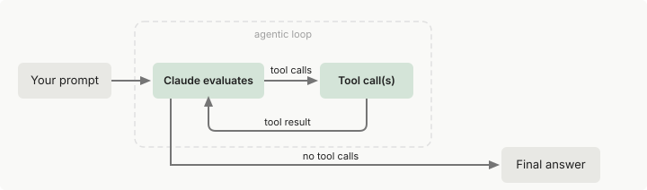

代理循环如何工作
了解消息生命周期、工具执行、上下文窗口和支持 SDK 代理的架构。
Agent SDK 让你能够在自己的应用程序中嵌入 Claude Code 的自主代理循环。SDK 是一个独立的包，让你能够以编程方式控制工具、权限、成本限制和输出。
TypeScript 和 Python SDK 都捆绑了原生 Claude Code 二进制文件，因此大多数安装不需要单独安装 Claude Code。有关需要单独安装的情况，请参阅 快速入门的安装说明。
启动代理时，SDK 运行与 Claude Code 相同的执行循环：Claude 评估你的提示，调用工具采取行动，接收结果，然后重复直到任务完成。本页解释循环内部发生的情况，以便你能够有效地构建、调试和优化代理。
循环概览
每个代理会话都遵循相同的周期：

- 接收提示。 Claude 接收你的提示，以及系统提示、工具定义和对话历史。SDK 产生一个
SystemMessage，子类型为"init"，包含会话元数据。 - 评估并响应。 Claude 评估当前状态并确定如何继续。它可能用文本响应、请求一个或多个工具调用，或两者都有。SDK 产生一个或多个
AssistantMessage对象，每个内容块一个，例如文本块或工具调用请求。 - 执行工具。 SDK 运行每个请求的工具并收集结果。每组工具结果反馈给 Claude 以做出下一个决定。你可以使用 hooks 在工具运行前拦截、修改或阻止工具调用。
- 重复。 步骤 2 和 3 作为一个循环重复。Claude 继续调用工具并处理结果，直到产生不含工具调用的回复。
- 返回结果。 SDK 产生最终的
AssistantMessage，包含文本响应（无工具调用），然后是ResultMessage，包含最终文本、令牌使用、成本和会话 ID。
一个简单的问题（例如"这里有什么文件？"）可能需要两到三个轮次：一到两个轮次调用 Glob，然后一个轮次根据结果进行回复。一个复杂的任务（例如"重构认证模块并更新测试"）可能会跨多个轮次串联数十个工具调用，Claude 会根据每个结果进行调整。
轮次和消息
轮次是循环中的一次往返：Claude 产生输出，如果输出中包含工具调用，SDK 会执行这些工具，结果自动反馈给 Claude。这一过程不会将控制权交回给您的代码。轮次持续进行，直到 Claude 产生不含工具调用的输出，此时循环结束并交付最终结果。
考虑对于提示"修复 auth.ts 中的失败测试"的完整会话可能是什么样子。
首先，SDK 将你的提示发送给 Claude 并产生一个 SystemMessage，包含会话元数据。然后循环开始：
- 轮次 1： Claude 调用
Bash运行npm test。SDK 产生一个AssistantMessage，包含工具调用，执行命令，然后产生一个UserMessage，包含输出（三个失败）。 - 轮次 2： Claude 在
auth.ts和auth.test.ts上调用Read。SDK 产生每个调用的AssistantMessage并返回文件内容。 - 轮次 3： Claude 调用
Edit修复auth.ts，然后调用Bash重新运行npm test。所有三个测试都通过。SDK 产生每个调用的AssistantMessage。 - 最后轮次： Claude 产生仅包含文本的响应，没有工具调用："修复了认证错误，所有三个测试现在都通过了。" SDK 产生最终的
AssistantMessage，包含此文本，然后是ResultMessage，包含相同的文本加上成本和使用情况。
那是四个轮次：三个有工具调用，一个最终仅包含文本的响应。
您可以使用 max_turns / maxTurns 限制循环。每个包含工具调用的轮次计为一轮，最终仅包含文本的回复再额外计一轮。如果没有这额外的一轮，运行将以子类型为 error_max_turns 的 ResultMessage 结束，且没有最终回复。例如，上面循环中的 max_turns=2 会在编辑步骤之前停止。您也可以使用 max_budget_usd / maxBudgetUsd 根据支出阈值限制轮次。
没有限制的情况下，循环运行直到 Claude 自己完成，这对于范围明确的任务很好，但对于开放式提示（"改进这个代码库"）可能运行很长时间。为生产代理设置预算是一个很好的默认值。有关选项参考，请参阅下面的 轮次和预算。
消息类型
当循环运行时，SDK 产生一个消息流。每条消息都有一个类型，告诉你它来自循环的哪个阶段。五个核心类型是：
-
SystemMessage： 会话生命周期事件。subtype字段区分它们： -
"init"：运行的会话元数据。当SessionStart或Setuphook 在会话启动期间运行时，其 hook 生命周期消息 在init消息之前到达 "compact_boundary"：在 compaction 后触发"informational"：来自循环的纯文本状态横幅"worker_shutting_down"：主机正在退出或 Remote Control 已断开连接
在 TypeScript 中，除了 "init" 之外的每个 subtype 在 SDKMessage union 中都是其自己的类型，而不是 SDKSystemMessage 的子类型。
* AssistantMessage： 为 Claude 响应中的每个内容块发出，包括最终仅包含文本的块。每个块都包含单个内容块，例如文本或工具调用，来自一个响应的消息共享一个消息 ID。
* UserMessage： 在每个工具执行后发出，包含发送回 Claude 的工具结果内容。也为你在循环中间流式传输的任何用户输入发出。
* StreamEvent： 仅在启用部分消息时发出。包含原始 API 流事件（文本增量、工具输入块）。请参阅 Stream responses。
* ResultMessage： 标记代理循环的结束。包含最终文本结果、令牌使用、成本和会话 ID。检查 subtype 字段以确定任务是否成功或达到限制。少数尾随系统事件（如 prompt_suggestion）可能在其后到达，因此迭代流直到完成，而不是在结果处中断。请参阅 Handle the result。
这五种类型涵盖了完整的代理循环生命周期。两个 SDK 也产生可观测性事件，例如速率限制状态和任务通知，这些不是驱动循环所必需的。有关完整列表，请参阅 Python message types reference 和 TypeScript message types reference。
处理消息
你处理哪些消息取决于你正在构建什么：
- 仅最终结果： 处理
ResultMessage以获取输出、成本以及任务是否成功或达到限制。 - 进度更新： 处理
AssistantMessage以查看 Claude 每个轮次在做什么，包括它调用了哪些工具。 - 实时流式传输： 启用部分消息（Python 中的
include_partial_messages，TypeScript 中的includePartialMessages）以实时获取StreamEvent消息。请参阅 Stream responses in real-time。
检查消息类型的方式取决于 SDK：
- Python： 使用从
claude_agent_sdk导入的类的isinstance()检查消息类型（例如，isinstance(message, ResultMessage)）。 - TypeScript： 检查
type字符串字段（例如，message.type === "result"）。AssistantMessage和UserMessage在.message字段中包装原始 API 消息，因此内容块位于message.message.content，而不是message.content。
[accordion] 示例：检查消息类型并处理结果
```python Python theme={null}
import asyncio
from claude_agent_sdk import query, AssistantMessage, ResultMessage, TextBlock, ToolUseBlockasync def main():
try:
async for message in query(prompt="Summarize this project"):
if isinstance(message, AssistantMessage):
# Each AssistantMessage carries one content block
for block in message.content:
if isinstance(block, TextBlock):
print(f"Claude: {block.text}")
elif isinstance(block, ToolUseBlock):
print(f"Tool call: {block.name}")
if isinstance(message, ResultMessage):
if message.subtype == "success":
print(message.result)
else:
print(f"Stopped: {message.subtype}")
except Exception as error:
# A single-shot query() raises after yielding an error result. If the
# failure was an error result, the error subtype branches above have
# already run; connection or process failures yield no result message.
print(f"Session ended with an error: {error}")asyncio.run(main())
``````typescript TypeScript theme={null}
import { query } from "@anthropic-ai/claude-agent-sdk";try {
for await (const message of query({ prompt: "Summarize this project" })) {
if (message.type === "assistant") {
// Each assistant message carries one content block
for (const block of message.message.content) {
if (block.type === "text") {
console.log(Claude: ${block.text});
} else if (block.type === "tool_use") {
console.log(Tool call: ${block.name});
}
}
}
if (message.type === "result") {
if (message.subtype === "success") {
console.log(message.result);
} else {
console.log(Stopped: ${message.subtype});
}
}
}
} catch (error) {
// A single-shot query() throws after yielding an error result. If the
// failure was an error result, the error subtype branches above have
// already run; connection or process failures yield no result message.
console.log(Session ended with an error: ${error});
}
```
工具执行
工具赋予你的代理采取行动的能力。没有工具，Claude 只能用文本响应。有了工具，Claude 可以读取文件、运行命令、搜索代码并与外部服务交互。
内置工具
SDK 包含与 Claude Code 相同的工具：
| 类别 | 工具 | 它们做什么 |
|---|---|---|
| 文件操作 | Read、Edit、Write |
读取、修改和创建文件 |
| 搜索 | Glob、Grep |
按模式查找文件，使用正则表达式搜索内容 |
| 执行 | Bash |
运行 shell 命令、脚本、git 操作 |
| Web | WebSearch、WebFetch |
搜索网络、获取和解析页面 |
| 发现 | ToolSearch |
动态查找和按需加载工具，而不是预加载所有工具 |
| 编排 | Agent、Skill、AskUserQuestion、TaskCreate、TaskUpdate |
生成子代理、调用技能、询问用户、跟踪任务 |
在不支持任务跟踪工具的模型上，Claude Code 仅在你选择加入时才提供 TaskCreate 和 TaskUpdate。
除了内置工具，你还可以：
工具权限
Claude 根据任务确定调用哪些工具，但你控制这些调用是否被允许执行。你可以自动批准特定工具、完全阻止其他工具，或要求对所有工具进行批准。三个选项一起工作以确定什么运行：
allowed_tools/allowedTools自动批准列出的工具。允许工具列表中包含["Read", "Glob", "Grep"]的只读 Agent 会运行这些工具而不提示，但从网络路径读取的情况除外。未列出的工具仍然可用，对它们的调用如果需要批准会转到权限模式和canUseTool。disallowed_tools/disallowedTools阻止列出的工具，无论其他设置如何。有关在工具运行前检查规则的顺序，请参阅 权限。permission_mode/permissionMode控制你想要多少人工监督。SDK 按固定顺序评估活跃模式以及你的允许和拒绝规则，详见 权限如何被评估。有关可用模式，请参阅 权限模式。
你也可以使用 "Bash(npm *)" 之类的规则来限制单个工具，以仅允许特定命令。有关完整规则语法，请参阅 权限。
当工具被拒绝时，Claude 接收拒绝消息作为工具结果，通常尝试不同的方法或报告它无法继续。
并行工具执行
当 Claude 在单个轮次中请求多个工具调用时，两个 SDK 都可以根据工具并发或顺序运行它们。只读工具（如 Read、Glob、Grep 和标记为只读的 MCP 工具）可以并发运行。修改状态的工具（如 Edit、Write 和 Bash）顺序运行以避免冲突。
自定义工具默认为顺序执行。要为自定义工具启用并行执行，请在其注释中设置 readOnlyHint。TypeScript 和 Python SDK 都使用来自 MCP SDK 的此字段名。
控制循环如何运行
你可以限制循环进行多少轮次、成本多少、Claude 推理的深度，以及工具是否需要在运行前获得批准。所有这些都是 ClaudeAgentOptions（Python）/ Options（TypeScript）上的字段。
轮次和预算
| 选项 | 它控制什么 | 默认值 |
|---|---|---|
最大轮次（max_turns / maxTurns） |
最大轮次数 | 无限制 |
最大预算（max_budget_usd / maxBudgetUsd） |
循环停止时的预估支出 | 无限制 |
当达到任一限制时，SDK 返回一个 ResultMessage，包含相应的错误子类型（error_max_turns 或 error_max_budget_usd）。有关如何检查这些子类型，请参阅 处理结果，有关语法，请参阅 ClaudeAgentOptions / Options。
预算上限涵盖 子代理：它们的支出计入总额。一旦支出达到上限，生成另一个子代理会失败并显示 Budget limit reached，Claude Code 会停止任何仍在运行的后台子代理。上限执行行为需要 Claude Code v2.1.217 或更高版本。
使用 流式输入，当轮次在最大轮次限制处结束时，仍在队列中的消息保持排队。Claude Code 不会将其添加到该轮次的最后一次模型调用中。它为该消息启动新轮次，该轮次的最大轮次计数重新开始。预算总额继续在消息间累积，一旦支出达到 maxBudgetUsd，同一对话中的后续消息以 error_max_budget_usd 结果结束。/clear 会重新开始预算。
预算余量
Claude Code 在模型响应到达后才将支出与 max_budget_usd / maxBudgetUsd 上限进行比较，因为每个响应的成本来自 API 随响应返回的 token 用量。达到上限的那个响应仍会完成，并计入 total_cost_usd。因此，支出最多可能超出上限该响应的成本，再加上此时仍在运行的子代理在停止前产生的任何支出。设置上限时，请为此预留余量。
努力级别
effort 选项控制 Claude 应用多少推理。较低的努力级别每个轮次使用更少的令牌并降低成本。并非所有模型都支持努力参数。有关哪些模型支持它，请参阅 Effort。
| 级别 | 行为 | 适合 |
|---|---|---|
"low" |
最小推理，快速响应 | 文件查找、列出目录 |
"medium" |
平衡推理 | 常规编辑、标准任务 |
"high" |
彻底分析 | 重构、调试 |
"xhigh" |
扩展推理深度 | 编码和代理任务，在 支持它的模型 上 |
"max" |
最大推理深度 | 需要深度分析的多步骤问题 |
如果你不设置 effort，Claude Code 会自行解析努力级别，按照 调整努力级别 所述的顺序。
effort 在每个响应内交换延迟和令牌成本以获得推理深度。扩展思考 是一个单独的功能，在输出中产生 thinking 块，Python 或 TypeScript 上 ThinkingConfig 的 display 字段控制你是否接收它们的文本。它们是独立的：你可以设置 effort: "low" 并启用扩展思考，或 effort: "max" 而不启用它。
对于执行简单、范围明确的任务（如列出文件或运行单个 grep）的代理，使用较低的努力来降低成本和延迟。在顶级 query() 选项中为整个会话设置 effort，或在 AgentDefinition 上使用 effort 字段为每个子代理设置以覆盖会话级别。
权限模式
权限模式选项（Python 中的 permission_mode，TypeScript 中的 permissionMode）控制代理是否在使用工具前请求批准：
| 模式 | 行为 | 用例 |
|---|---|---|
"default" |
需要批准且不被允许规则覆盖的工具调用触发你的 canUseTool 回调；没有回调意味着拒绝 |
具有自定义批准回调的交互式应用程序 |
"acceptEdits" |
自动批准文件编辑和常见文件系统命令（mkdir、touch、mv、cp 等）；其他 Bash 命令遵循默认规则 |
你信任 Claude 的编辑并想要更快的迭代，例如在原型设计期间或在隔离目录中工作时 |
"plan" |
Claude 探索并规划而不编辑你的源文件；文件编辑永远不会自动批准，并通过你的 canUseTool 回调提示 |
你想要 Claude 提议更改而不执行它们，例如在代码审查期间或当你需要在进行更改前批准它们时 |
"dontAsk" |
从不提示。由 权限规则 预批准的工具会运行，在 default 模式中不需要批准的调用（如您的工作目录内的文件读取）也会运行。所有其他会提示的调用都被拒绝，不过您安装的 mod 仍可以批准其中的部分调用。少数调用（如 从网络路径读取）即使您已允许也会被拒绝。有关完整列表，请参阅 Don't ask 模式 |
无人批准调用的无头 Agent |
"auto" |
使用模型分类器来审查诸如 shell 命令和网络请求之类的操作，允许或阻止它审查的每一个。有关可用性和决策顺序，请参阅 自动模式 | 仍然想要工具使用安全防护的自主代理 |
"bypassPermissions" |
运行工具调用而不请求批准，包括对您未在 allowedTools 中列出的工具的调用。少数调用仍会进入您的 canUseTool 回调，这些调用列在 Bypass permissions 模式 下。在 TypeScript SDK 中，还需要在 options 中设置 allowDangerouslySkipPermissions: true。无法在 Unix 上以 root 身份运行。仅在隔离环境中使用，其中 Agent 的操作无法影响您关心的系统 |
CI、容器或其他隔离环境 |
对于交互式应用程序，使用 "default" 和工具批准回调来显示批准提示。对于开发机器上的自主代理，"acceptEdits" 自动批准文件编辑和常见文件系统命令（mkdir、touch、mv、cp 等），同时仍然在允许规则后面限制其他 Bash 命令。为 CI、容器或其他隔离环境保留 "bypassPermissions"。有关完整详情，请参阅 权限。
模型
设置 model 选项以选择哪个模型运行会话。有关更多信息，请参阅 选择模型。
上下文窗口
上下文窗口是会话期间可用于 Claude 的信息总量。它在会话内的轮次之间不重置。一切都累积：系统提示、工具定义、对话历史、工具输入和工具输出。在轮次之间保持相同的内容（系统提示、工具定义、CLAUDE.md）自动进行提示缓存，这减少了重复前缀的成本和延迟。有关自定义系统提示或 append 文本如何影响跨会话的缓存重用，请参阅修改系统提示。
什么消耗上下文
以下是每个组件如何影响 SDK 中上下文的方式：
| 源 | 何时加载 | 影响 |
|---|---|---|
| 系统提示 | 每个请求 | 小的固定成本，始终存在 |
| CLAUDE.md 文件 | 会话开始，通过 settingSources |
每个请求中的完整内容（但提示缓存，所以仅第一个请求支付全部成本） |
| 工具定义 | 对于 Bash、Read 和 Edit 等核心内置工具，每个请求都会加载；对于 MCP 工具和其他内置工具则按需加载，工具搜索默认会延迟加载这些工具 | 在配置工具搜索中列出的情况下，所有 schema 都会预先加载 |
| 对话历史 | 在轮次中累积 | 随着每个轮次增长：提示、响应、工具输入、工具输出 |
| 技能描述 | 会话开始，通过设置源 | 简短摘要；完整内容仅在调用时加载 |
大型工具输出消耗大量上下文。读取大文件或运行具有详细输出的命令可以在单个轮次中使用数千个令牌。上下文在轮次中累积，因此具有许多工具调用的较长会话比短会话构建更多上下文。
自动压缩
当上下文窗口接近其限制时，SDK 自动压缩对话：它总结较旧的历史以释放空间，保持你最近的交换和关键决定完整。当这发生时，SDK 在流中发出一条消息，其 type: "system" 和 subtype: "compact_boundary"（在 Python 中这是一个 SystemMessage；在 TypeScript 中它是一个单独的 SDKCompactBoundaryMessage 类型）。
压缩用摘要替换较旧的消息，因此对话早期的特定指令可能不会被保留。持久规则属于 CLAUDE.md（通过 settingSources 加载），而不是初始提示，因为 CLAUDE.md 内容在每个请求上重新注入。
你可以通过多种方式自定义压缩行为：
- CLAUDE.md 中的总结指令： 压缩器像任何其他上下文一样读取你的 CLAUDE.md，所以你可以包含一个部分告诉它在总结时保留什么。压缩器根据意图匹配，所以部分标题是自由形式的。
PreCompacthook： 在压缩发生前运行自定义逻辑，例如存档完整成绩单。hook 接收一个trigger字段（manual或auto）。请参阅 hooks。- 手动压缩： 发送
/compact作为提示字符串以按需触发压缩。以这种方式发送的命令是普通的 SDK 输入。请参阅通过名称分派命令。
[accordion] 示例：CLAUDE.md 中的总结指令
向你的项目的 CLAUDE.md 添加一个部分，告诉压缩器保留什么。标题名称不特殊；使用任何清晰的标签。
```markdown CLAUDE.md theme={null}
Summary instructions
When summarizing this conversation, always preserve:
- The current task objective and acceptance criteria
- File paths that have been read or modified
- Test results and error messages
- Decisions made and the reasoning behind them
```
保持上下文高效
对于长时间运行的代理的几个策略：
- 为子任务使用子代理。 子代理只返回其最终回复，因此主 Agent 的上下文只会增加一份摘要，而不是子任务的会话记录。
- 对工具有选择性。 每个工具定义占用上下文空间。在
AgentDefinition上使用tools字段将子代理限制在它们需要的最小集合。 - 监视 MCP 服务器成本。 MCP 工具搜索默认延迟 MCP 工具架构，并按需加载它们。当工具搜索关闭或已回退到预先加载时，每个 MCP 服务器将其所有工具架构添加到每个请求，因此具有许多工具的几个服务器可以在代理执行任何工作之前消耗大量上下文。有关应用回退的配置，请参阅配置工具搜索。
- 对常规任务使用较低的努力。 为仅需要读取文件或列出目录的代理设置努力为
"low"。这减少了令牌使用和成本。
有关每个功能上下文成本的详细分解，请参阅理解上下文成本。
会话和连续性
与 SDK 的每次交互都创建或继续一个会话。从 ResultMessage.session_id（在两个 SDK 中都可用）捕获会话 ID 以稍后恢复。TypeScript SDK 也将其作为初始化 SystemMessage 上的直接字段公开；在 Python 中它嵌套在 SystemMessage.data 中。
当你恢复时，来自先前轮次的完整上下文被恢复：读取的文件、执行的分析和采取的操作。你也可以分叉一个会话以分支到不同的方法而不修改原始方法。
有关恢复、继续和分叉模式的完整指南，请参阅 会话管理。要在无状态容器或无服务器主机之间恢复会话，请传递一个 session_store / sessionStore 适配器，以便 SDK 将记录镜像到你自己的后端，另一个主机可以恢复它们。Claude Code 子进程仍然首先写入本地磁盘。有关哪个副本在新会话与从存储恢复的运行中存活，以及如何保持本地副本临时的信息，请参阅 双写架构。
在 Python 中，ClaudeSDKClient 跨多个调用自动处理会话 ID。有关详情，请参阅 Python SDK 参考。
处理结果
当循环结束时，ResultMessage 告诉你发生了什么并给你输出。subtype 字段（在两个 SDK 中都可用）是检查终止状态的主要方式。
| 结果子类型 | 发生了什么 | result 字段可用？ |
|---|---|---|
success |
Claude 正常完成了任务 | 是 |
error_max_turns |
在完成前达到 maxTurns 限制 |
否 |
error_max_budget_usd |
在完成前达到 maxBudgetUsd 限制 |
否 |
error_during_execution |
错误中断了循环（例如，取消的请求） | 否 |
error_max_structured_output_retries |
在配置的重试限制内没有生成有效的结构化输出：每次尝试都未通过验证，或者模型回退撤销了完成的输出且没有成功重试 | 否 |
result 字段保存最终文本输出，仅在 success 变体上存在，因此在读取它之前始终检查子类型。
所有结果子类型都包含 total_cost_usd、usage、num_turns 和 session_id，因此你可以跟踪成本并在错误后恢复。需要防范两件事：
- 在会话崩溃后，最终结果是一个
error_during_execution，其成本字段可能被清零，其stop_reason为null，进程在发出它后退出。请参阅 会话崩溃后恢复总计。 - 在 Python 中，
total_cost_usd、usage和model_usage被类型化为可选的，因此在读取它们之前检查它们不是None。
usage 字段仅涵盖主代理循环。使用 modelUsage 或 Python 中的 model_usage 进行整个树的令牌和成本计算。有关解释 usage 字段的详情，请参阅 跟踪成本和使用。
当查询以错误结果结束时：
- 单次
query()调用会产生最终结果消息，然后抛出一个包含失败文本的错误，例如Reached maximum number of turns。抛出是有意的。如果你的代码需要在其后继续，请将循环包装在 try 块中。底层 Claude Code 进程也会以非零代码退出。 - 流式输入会话保持活跃，你可以继续发送消息，除了会话崩溃后，它会发出最终的
error_during_execution结果并退出进程。
结果还包括一个 stop_reason 字段（TypeScript 中的 string | null，Python 中的 str | None），指示模型为什么在其最后轮次停止生成。常见值是 end_turn（模型正常完成）、max_tokens（达到输出令牌限制）和 refusal（模型拒绝了请求）。在循环产生的错误结果上，stop_reason 携带循环结束前最后一个助手响应的值；会话崩溃后 Claude Code 合成的结果携带 null。
要检测拒绝，检查 stop_reason === "refusal"（TypeScript）或 stop_reason == "refusal"（Python）。有关完整类型，请参阅 SDKResultMessage（TypeScript）或 ResultMessage（Python）。
Hooks
Hooks 是在循环中特定点触发的回调：在工具运行前、返回后、代理完成时等。一些常用的 hooks 是：
| Hook | 何时触发 | 常见用途 |
|---|---|---|
PreToolUse |
在工具执行前 | 验证输入、阻止危险命令 |
PostToolUse |
在工具返回后 | 审计输出、触发副作用 |
UserPromptSubmit |
当发送提示时 | 将额外上下文注入提示 |
Stop |
当代理完成时 | 验证结果、保存会话状态 |
SubagentStart / SubagentStop |
当子代理生成或完成时 | 跟踪和聚合并行任务结果 |
PreCompact |
在上下文压缩前 | 在总结前存档完整成绩单 |
Hooks 在你的应用程序进程中运行，而不是在代理的上下文窗口内，因此它们不消耗上下文。Hooks 也可以短路循环：拒绝工具调用的 PreToolUse hook 防止它执行，Claude 接收拒绝消息。
两个 SDK 都支持上述所有事件。TypeScript SDK 包括 Python 尚不支持的额外事件。有关完整事件列表、每个 SDK 的可用性和完整回调 API，请参阅 使用 hooks 控制执行。
将其全部放在一起
此示例将本页的关键概念组合到修复失败测试的单个代理中。它使用允许的工具（自动批准，以便代理自主运行）、项目设置和轮次和推理努力的安全限制来配置代理。当循环运行时，它捕获会话 ID 以进行潜在恢复、处理最终结果并打印总成本。
由于单个 query() 调用在产生错误结果后会引发异常，循环被包装在 try 块中，以便在达到限制时脚本能够干净地退出。
import asyncio
from claude_agent_sdk import query, ClaudeAgentOptions, ResultMessage
async def run_agent():
session_id = None
try:
async for message in query(
prompt="Find and fix the bug causing test failures in the auth module",
options=ClaudeAgentOptions(
allowed_tools=[
"Read",
"Edit",
"Bash",
"Glob",
"Grep",
], # Listing tools here auto-approves them (no prompting)
setting_sources=[
"project"
], # Load CLAUDE.md, skills, hooks from current directory
max_turns=30, # Prevent runaway sessions
effort="high", # Thorough reasoning for complex debugging
),
):
# Handle the final result
if isinstance(message, ResultMessage):
session_id = message.session_id # Save for potential resumption
if message.subtype == "success":
print(f"Done: {message.result}")
elif message.subtype == "error_max_turns":
# Agent ran out of turns. Resume with a higher limit.
print(f"Hit turn limit. Resume session {session_id} to continue.")
elif message.subtype == "error_max_budget_usd":
print("Hit budget limit.")
else:
print(f"Stopped: {message.subtype}")
if message.total_cost_usd is not None:
print(f"Cost: ${message.total_cost_usd:.4f}")
except Exception as error:
# A single-shot query() raises after yielding an error result. If the
# failure was an error result, the error subtype branches above have
# already run; connection or process failures yield no result message.
print(f"Session ended with an error: {error}")
asyncio.run(run_agent())
import { query } from "@anthropic-ai/claude-agent-sdk";
let sessionId: string | undefined;
try {
for await (const message of query({
prompt: "Find and fix the bug causing test failures in the auth module",
options: {
allowedTools: ["Read", "Edit", "Bash", "Glob", "Grep"], // Listing tools here auto-approves them (no prompting)
settingSources: ["project"], // Load CLAUDE.md, skills, hooks from current directory
maxTurns: 30, // Prevent runaway sessions
effort: "high" // Thorough reasoning for complex debugging
}
})) {
// Save the session ID to resume later if needed
if (message.type === "system" && message.subtype === "init") {
sessionId = message.session_id;
}
// Handle the final result
if (message.type === "result") {
if (message.subtype === "success") {
console.log(`Done: ${message.result}`);
} else if (message.subtype === "error_max_turns") {
// Agent ran out of turns. Resume with a higher limit.
console.log(`Hit turn limit. Resume session ${sessionId} to continue.`);
} else if (message.subtype === "error_max_budget_usd") {
console.log("Hit budget limit.");
} else {
console.log(`Stopped: ${message.subtype}`);
}
console.log(`Cost: $${message.total_cost_usd.toFixed(4)}`);
}
}
} catch (error) {
// A single-shot query() throws after yielding an error result. If the
// failure was an error result, the error subtype branches above have
// already run; connection or process failures yield no result message.
console.log(`Session ended with an error: ${error}`);
}
当代理成功完成时，该示例打印一行 Done: 及代理对修复的总结，然后打印一行类似 Cost: $0.0312 的内容。
后续步骤
现在你理解了循环，以下是根据你正在构建的内容去往的地方：
- 还没有运行代理？ 从 快速入门 开始，获取 SDK 安装并查看完整示例端到端运行。
- 准备好连接到你的项目？ 加载 CLAUDE.md、技能和文件系统 hooks，以便代理自动遵循你的项目约定。
- 构建交互式 UI？ 启用 流式传输 以在循环运行时显示实时文本和工具调用。
- 需要对代理能做什么进行更严格的控制？ 使用 权限 锁定工具访问，并使用 hooks 在工具执行前审计、阻止或转换工具调用。
- 运行长期或昂贵的任务？ 将隔离的工作卸载到 子代理 以保持你的主上下文精简。
- 作为服务部署？ 查看 托管 Agent SDK 了解容器和无服务器指导，以及 会话存储 以将会话持久化到你自己的后端。
有关代理循环的更广泛概念图（不是 SDK 特定的），请参阅 Claude Code 如何工作。有关在 Claude Code 中设计循环的实用指南，从轮次制到目标制和主动循环，请参阅博客上的 Loop engineering: getting started with loops。